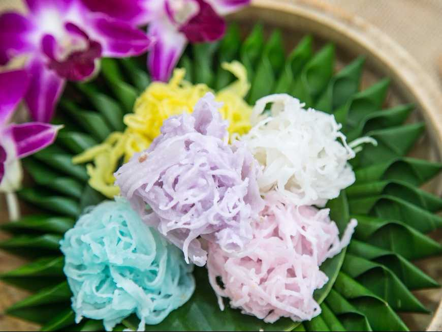
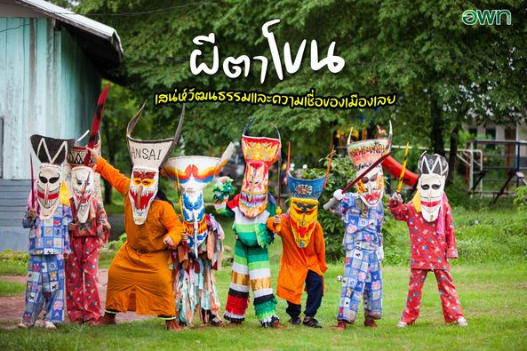

ของฝากขึ้นชื่อจากเชียงคาน ทำจากเนื้อมะพร้าวเกรดดี นำมาเคี่ยวน้ำตาล มีทั้งแบบแผ่นนิ่มและแผ่นกรอบ รสชาติหวานมัน หอมอร่อย

สัญลักษณ์ทางวัฒนธรรมของอำเภอด่านซ้าย มีทั้งหน้ากากขนาดจริงสำหรับสวมใส่ และของที่ระลึกขนาดเล็ก เช่น พวงกุญแจ หรือแม่เหล็กติดตู้เย็น